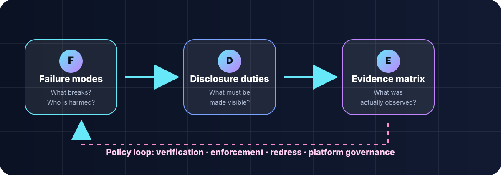
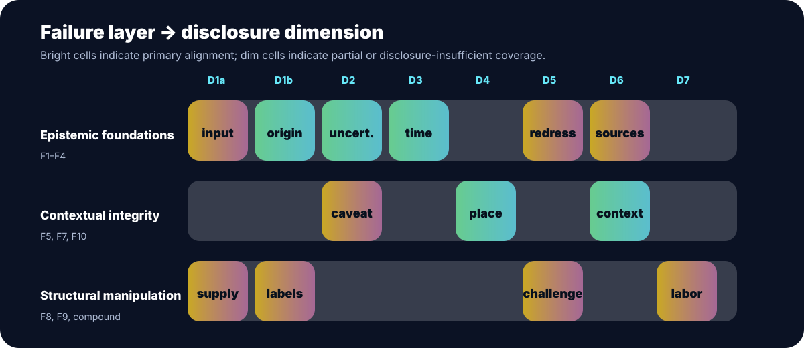
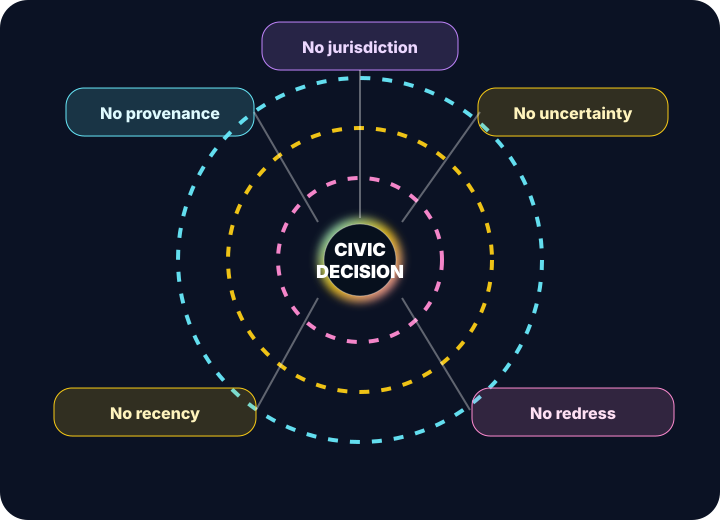

Diagnose
Identify the democratic function disrupted: informed voting, public deliberation, journalistic verification, rights-claiming, or institutional accountability.
CORDA Project 06 · Spring 2026
Integrity disclosures for democratic information environments.
Generative AI does not only create false content. It can remove the signals citizens need to judge information: provenance, uncertainty, recency, jurisdiction, context, and contestability. This project turns those failure modes into a compact governance framework.
The work asks what minimal integrity disclosures should be expected from generative AI systems used in civic settings. The answer is not a single AI label. It is a failure-mode-led architecture: diagnose how democratic information breaks, operationalize the needed disclosures, test them on concrete cases, and translate the result into policy duties.
The framework keeps the causal theory and the operational rubric separate. Failure modes explain why democracy is at risk. Disclosure dimensions specify what systems should reveal. Pilot cases test whether the dimensions can be scored. Policy recommendations say what institutions should require.

Identify the democratic function disrupted: informed voting, public deliberation, journalistic verification, rights-claiming, or institutional accountability.
Map the failure to a disclosure dimension: provenance, uncertainty, temporal grounding, jurisdiction, contestability, context integrity, or supply-chain accountability.
Score observed disclosures with evidence, not impressions: 0 absent, 1 partial, 2 adequate, with evidence-quality flags.
Separate what disclosure can solve from what needs verification, enforcement, redress, platform governance, or institutional audit.
The ten failure modes are grouped into three layers. Click a layer to see the failure modes it contains.
The rubric uses eight dimensions. D1a and D7 operate mainly at the system level; D1b–D6 operate closer to the civic output a user encounters.

The pilot is not a provider ranking. It is a rubric-function test. At N=4, the strongest finding is universal absence of labor and supply-chain disclosure, plus design issues around elicited disclosures, jurisdictional prompting, and platform-layer verification.
All four pilot systems scored absent on labor and supply-chain provenance. That makes D7 an important governance finding, but a poor equal-weight output score.
Temporal grounding often improved only when systems were asked for recency and sources. Volunteered disclosure and elicited disclosure should be logged separately.
A system can implement strong labeling mechanisms inside an information-control environment. The rubric scores disclosure mechanics; policy analysis interprets democratic purpose.
A missing label is one problem. A civic answer with no provenance, no uncertainty signal, no temporal grounding, no jurisdiction, and no correction path is a different class of democratic risk.

Select Tier 1 failures:
The policy framework should not claim that disclosure solves everything. It should sort failures by what disclosure can realistically do.
Temporal grounding, jurisdictional tagging, and basic output provenance can often be handled with mandatory interface, metadata, and response-level disclosures.
Uncertainty masking, hallucination, aggregation distortion, contextual stripping, and non-contestability need disclosure plus source validation, human review, correction channels, and audit trails.
Cross-border obfuscation, identity simulation, and synthetic public participation require platform verification, authentication, enforcement, and institutional monitoring.
Use this single BibTeX entry to cite the public project website.
@misc{sahoo2026failuremodegovernance,
title = {Failure-Mode Governance for Generative AI: Integrity Disclosures in Democratic Information Environments},
author = {Sahoo, Subramanyam and S{\'a}nchez Garc{\'i}a, David and Kulueva, Sabina and Veloso, Maximiliano and Christoph, Joel},
year = {2026},
howpublished = {Interactive research website},
note = {CORDA Project 06},
url = {https://subramanyamsahoo.github.io/Integrity-Disclosures-for-Generative-AI-in-Democratic-Information-Environments/}
}